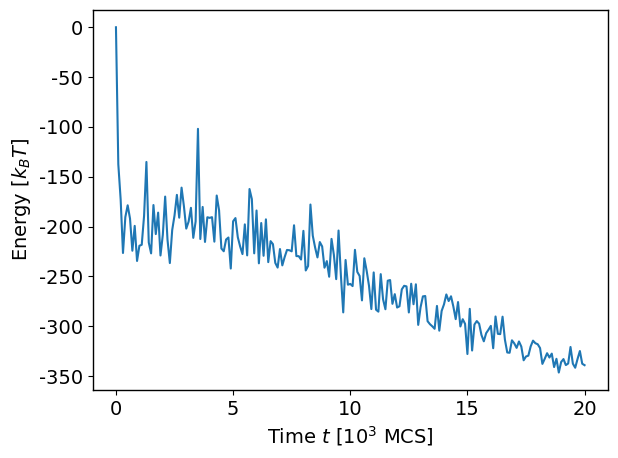
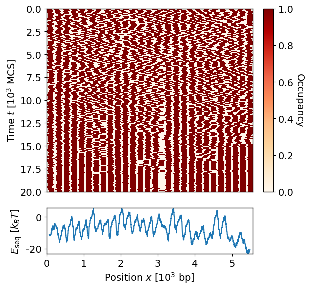
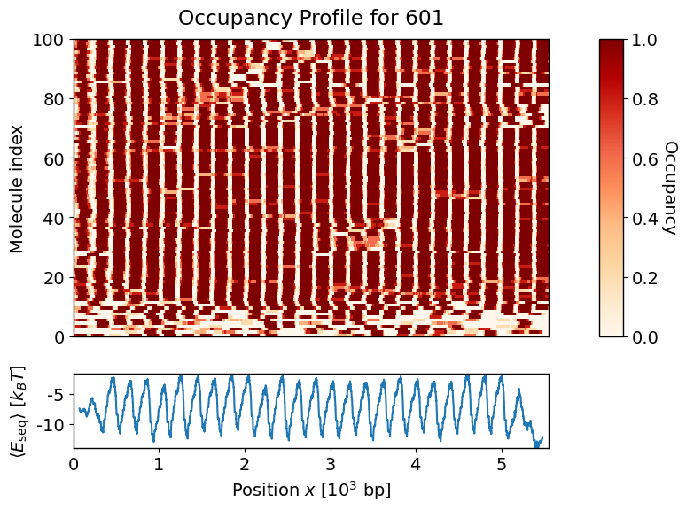

Tutorial 2: From Methylation Probability to Nucleosome Positioning Prediction
With the normalized methylation probabilities computed in the last tutorial (Tutorial 1), we are now ready to perform simulations to sample the nucleosome positions. As in Tutorial 1, we focus on the 601 fibers for illustration and brevity, and one can process R1 and R2 fibers with the exact same steps. Let us first reload the processed experimental HDF5 file:
[1]:
from pathlib import Path
from catella.experiment.methdata import MethPrintExperiment
exp_h5 = Path("example/tut01_meth_prob/experiment/analysis.h5")
exp_data = MethPrintExperiment.load(exp_h5)
To start the simulations, we need to create a configuration file specifying the parameter values. The list of parameters required is as follows:
Name |
Description |
|---|---|
nucbp |
The amount of DNA (in bp) occupied by a bound nucleosome (e.g., 147 bp) |
llink |
Length (in bp) of the linker DNA |
elink |
Energy scale (in \(k_BT\)) of the linker DNA potential. |
mu |
Chemical potential (in units of \(k_BT\)). The energy associated with non-specific binding of nucleosome to DNA |
start_temp |
Start temperature |
end_temp |
End temperature |
cool_option |
How to adjust temperature over time. Options are “linear”, “geometric”, or “constant” |
nsweep |
Number of “sweeps” or timesteps in the simulation |
print_freq |
Frequency (in sweeps) at which to record simulation data |
emax |
The maximum energy cost allowed (in \(k_BT\)) from the methylation footprinting data |
It may be difficult to determine an appropriate value for some of these parameters a priori. One of which is the starting temperature (start_temp). Setting it too low may prevent the system from exploring the full energy landscape and sampling space initially. catella provides a method estimate_start_temp to help with this estimation. This method returns a given percentile (default the 90th) of the magnitude of the sequence-specific energy landscape \(|E_{\text{seq}}|\),
estimated from a random subsample of molecules. Setting start_temp to approximately this value ensures that even large energy barriers in the data are readily crossable early in the annealing schedule, so the simulation does not freeze into its initial nucleosome configuration. Here we use a higher-than-default percentile (99th) for a firmer guarantee that even the rarest, most extreme barriers are crossable, at the cost of a hotter and slightly slower-to-mix start:
[2]:
import catella
start_temp = catella.estimate_start_temp(exp_data, prob_name="meth_prob_model", percentile=99.0)
print(f"Estimated start temperature: {start_temp}")
Estimated start temperature: 22.060434403162414
Given this, we will set start_temp = 22.0. We pair this with end_temp = 1.0, the same \(k_BT\) unit that mu, elink, and emax are already expressed in, so that the coldest state of the annealing schedule represents the model’s actual equilibrium distribution rather than an artificially sharpened or flattened one. start_temp only needs to be high enough for the schedule to mix well early on, and it does not change what that final, converged distribution is, so it is
fine (and expected) for different experiments or loci to need different start_temp values. Cooling below end_temp = 1.0 (i.e., \(\beta > 1\)) would instead sample an artificially sharpened, over-confident version of the posterior, understating the true heterogeneity between simulation replicates; cooling only to a temperature above 1.0 would conversely flatten the posterior and overstate that heterogeneity. Since we want the replicate ensemble to reflect the model’s actual
uncertainty in nucleosome position, end_temp = 1.0 is the correct choice rather than a free parameter to tune lower for a sharper-looking answer.
Another parameter that is difficult to estimate is the chemical potential \(\mu\). Since the energy landscape can take both negative and positive values, a neutral starting choice for mu is 0. Alternatively, one could set \(\mu\) so that it is equal to the median of the data energy landscape, i.e., \(\mu = \text{median}(E_{\text{data}})\). This can be done by setting \(\mu\) to an arbitrary number (say 0) in the parameter list, and then using the option use_median_eseq_mu
in catella.run. We use mu = 0.0 directly for this tutorial.
Additionally, we set emax = 25.0, chosen to sit just above our estimated start_temp = 22.0. If emax were set well below start_temp, the clamp would truncate the same large energy barriers that start_temp was calibrated to make crossable, undoing that calibration. We set elink = 25.0 to match emax, so the steric repulsion is energetically comparable to the sequence-derived energy scale over a meaningful range as nucleosomes approach the llink boundary, not only in
the last fraction of a bp before contact (which is already forbidden even at a much smaller elink, since the repulsion grows steeply at short range regardless). This keeps the physical packing preference and the data-driven preference on a similar energy footing.
We specify all the simulation parameters utilizing the SimSettings object:
[3]:
from catella.simulation.engine import SimSettings
settings = SimSettings(
nucbp=147,
llink=50,
elink=25.0,
mu=0.0,
start_temp=22.0,
end_temp=1.0,
cool_option="geometric",
nsweep=20000,
print_freq=100,
emax=25.0)
One can also specify the parameters in a json or yml file. For example, in .yml format the file looks as follows:
[4]:
!cat example/tut02_run_sim/simulation/sim_params.yml
nucbp: 147
llink: 50
elink: 25.0
mu: 1.0
start_temp: 22.0
end_temp: 1.0
cool_option: "geometric"
nsweep: 20000
print_freq: 100
emax: 25.0
Next, we need to extract the methylation probabilities \(p_M\) from the processed data and store them in a dictionary:
[5]:
meth_prob = {"601": exp_data.analysis["601"]["meth_prob_model"]}
We now use the catella.run method to run the simulations. This method requires specifying the chromosomes (DNA segments) on which we would like to perform the sampling, the number of simulations to conduct per molecule (nsim), the simulation parameters (settings), and the methylation probability profile for each molecule in each chromosome (meth_prob). We also need to specify the output directory (out_dir) where the simulation results will be stored. The simulations can be
run in parallel using multiple processes, and this is set via nworker (default is 1). By default, the verbose option is set to True, allowing a progress bar to be displayed in the terminal that provides an estimation of the time remaining before all jobs are complete.
[6]:
sim_dir = Path("example/tut02_run_sim/simulation/result/") # Note that this dir must not exist beforehand
sim_data = catella.run(chroms="601",
nsim=5,
seed=2346,
meth_prob=meth_prob,
settings=settings,
out_dir=sim_dir,
nworker=20)
With nworker=20, the simulations should take around ten minutes to complete (on a modern MacBook Pro with an M4 chip). Each simulation generates an HDF5 file containing the output data as specified by the out_types option in run. The default value for this option is all, including all information about the system such as its energy and temperature over time as well as the nucleosome positions. All simulation HDF5 files are located within the sub-directory raw_data in
out_dir. Additionally, an overall dataset HDF5 file containing the metadata of the simulations and the downstream analysis is created and stored in out_dir/results.h5 by default. The name of this file can be changed via the dataset_name option in run.
Note: Sub-directories within raw_data should not be touched, as catella relies on the file structure there to access the raw simulation data.
Analyzing the simulation results
We first inspect the raw simulation data to check that the results are reasonable before conducting any downstream analysis. To access the raw data from a specific simulation run (say run 0 for molecule 0), we use the raw property, which returns a SimData object:
[7]:
sim_data.raw["601",0,0]
[7]:
SimData(nucbp, nbp, llink, elink, mu, seed, time, energy, position, temp)
Note: All molecules and simulation runs are labelled using zero-based indexing.
Note: Accessing simulation properties such as energy and temp (for the system’s temperature) always returns a view of the underlying numpy array that is non-writeable to preserve data integrity. The same applies to the property position, which returns a Tuple of non-writeable numpy arrays of the nucleosome positions over time.
A good sanity check that we have run the simulation for long enough and that the system has reached a steady state is to see whether the total energy has stabilized. We can plot the time series of the energy values as follows:
[8]:
catella.plot_energy(sim_data, chrom="601", mol=0, run=0)

We can see that the energy dropped significantly at the beginning and then gradually decreased and stabilized at around \(-350 k_BT\) over time (reported in units of MCS, or number of Monte Carlo sweeps).
Another way to see whether the system has stabilized is to plot the nucleosome positions over time as a heatmap. This can be done using the catella.plot_nuc_pos method, and it is useful to enable the plot_eseq option to show within the same plot the sequence-specific energy landscape \(E_{\text{seq}}\) for the molecule derived from its methylation footprinting data.
[9]:
catella.plot_nuc_pos(sim_data, chrom="601", mol=0, run=0, plot_eseq=True)

The nucleosome locations are shown in yellow in this plot, and they behave as one would expect: as the temperature decreases, the extent of repositioning and shuffling reduces, and the nucleosomes freeze into a final set of positions. Also, comparing with the energy landscape \(E_{\text{seq}}\), we see that the nucleosomes tend to avoid the maxima and sit near the minima as expected.
To get a sense of the overall picture of nucleosome positioning across all molecules, we use catella.analyze to perform some basic quantification of the simulated nucleosome positions:
[10]:
catella.analyze(sim_data)
This method computes the average number of nucleosomes (mean_nnuc) and the average nucleosome occupancy (occup) for each molecule. The latter is defined as
where \(s_i^{(n)} = 1\) if, in the \(n\)th simulation, a nucleosome occupies base-pair \(x\) and \(0\) otherwise.
These results are stored in sim_data.analysis. For instance, to retrieve the average number of nucleosomes in each 601 array fiber, we do the following:
[11]:
sim_data.analysis["601"]["mean_nnuc"]
[11]:
| 0 | |
|---|---|
| 0 | 27.0 |
| 1 | 22.6 |
| 2 | 25.2 |
| 3 | 27.4 |
| 4 | 13.6 |
| ... | ... |
| 95 | 25.8 |
| 96 | 28.0 |
| 97 | 27.4 |
| 98 | 28.0 |
| 99 | 27.4 |
100 rows × 1 columns
To visualize the averaged nucleosome occupancy across all molecules, we sort the molecules by the similarity of their occupancy profiles, and then use the catella.plot_occup method to plot the heatmap. We again enable the plot_eseq option to see the correspondence between the nucleosome positions and the underlying energy landscape:
[12]:
sorted_mat = catella.sort_by_linkage(dataset=sim_data, data_name="occup")
catella.plot_occup(sim_data, chrom="601", occup_name="occup_sorted", plot_eseq=True)

This heatmap agrees with our expectation that 601 arrays have highly regular nucleosome positions. The simulations again highlight a few molecules with low nucleosome occupancy, likely because histone octamer transfer was less successful for this subset of fibers. Finally, we can save our analyses of the simulation results (in the HDF5 file out_dir/results.h5) that can be retrieved later for further post-processing:
[13]:
sim_data.save()